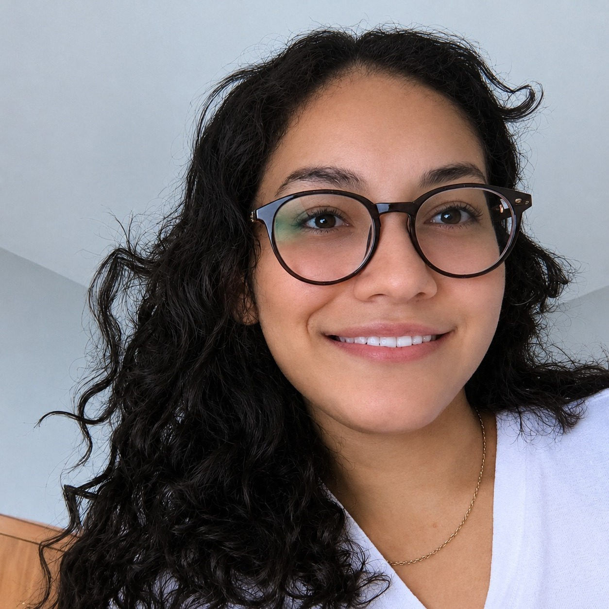

Ana Carolina Gomes da Silva Desenvolvedora Front-end no Programa TrilhasSou Ana Carolina, estou finalizando o curso de Geografia na Universidade Estadual do Maranhão (UEMA), em São Luís. Sempre tive interese pelo mundo da tecnologia, e minha trajetória na Geografia me aproximou da análise de dados e do território, o que trouxe a geotecnologia para o meu dia-a-dia.
Hoje estou aprendendo desenvolvimento Front-end no Programa Trilhas, com HTML, CSS, Git e GitHub, e cada desafio me mostra como é possível transformar ideias em páginas e ferramentas funcionais.
Atualmente busco como desenvolvedora unir esses dois mundos: criar sites, mapas e painéis que ajudem a criar soluções digitais para assim, organizar, visualizar e comunicar informações geográficas e sociais.